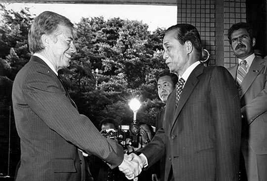
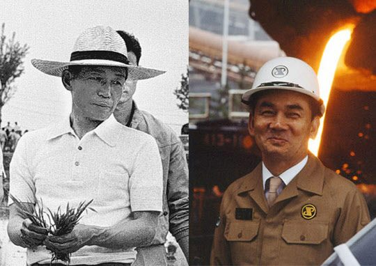
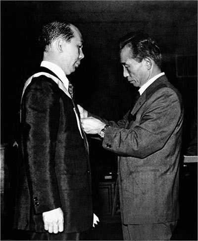

보도일 2015-05-13출처 조선일보 프리미엄조선 연재
1979년 7월 초순, 장안의 화제는 2박3일 방한 일정을 마치고 7월 1일 서울을 떠난 지미 카터 미국 대통령과 박정희 대통령의 정상회담이었다. 인권 문제, 주한미군철수 문제를 놓고 양국 수뇌가 심하게 얼굴을 붉혔다는 소문이 장삼이사의 술안주 거리였다. 유언비어가 아니라 실상에 가까운 거였고….
도쿄에서 7개국 정상회의를 마치고 서울로 들어왔던 미국 대통령 일행은 ‘포스코의 귀중한 한 사람’에게 자유를 선물하기도 했다. 영어생활을 6년 넘게 감당한 뒤에도 여전히 감옥에 갇혀 있던 김철우 박사(연재 26회 참조)가 그해 8월 15일 광복절 특사로 풀려나는 것이다.
냉전체제의 이념대결이 세계에서 가장 엄혹하게 관철된 한반도의 한 희생양이 그토록 지난하게 자유를 회복한 과정에는 그의 일본인 친구들의 조력도 작용했다. 김철우를 잘 아는 그들(과학자)이 지미 카터를 수행한 비서와 따로 만나서 ‘김철우는 스파이가 아니다’라는 진정을 했고, 그것이 한국 정부의 요로에 강하게 전달되었던 것이다.

시나브로 서울시민이 지미 카터의 방한 뉴스를 잊어 가는 7월 24일, 청와대에서 대통령이 주재하는 회의가 열렸다. 안건은 포항종합제철 제2공장 입지 선정이었다. 고재일 건설부 장관, 최각규 상공부 장관, 박태준 사장이 참석했다.
그 무렵의 한여름 밤이었다. 박태준은 박정희의 부름을 받았다. 그때로부터 삼십 년을 헤아릴 만한 세월이 더 흐른 다음, 그때 그 술자리에 대한 박태준의 회고는 무겁고도 짧았다. 그것이 박정희와 마지막 만남, 마지막 대작, 마지막 대화였다는 사실 때문에 회고 자체가 벅차게 쓸쓸한 것인지….
“임자하고가 제일 편해. 머리를 몇 개씩 달고 마시는 술이 술이야? 간장이지.”
“오늘 저녁에는 틀림없이 술을 드시게 됩니다.”
두 사람은 환히 웃었다. 그러나 박태준은 박정희가 몹시 고독해 보였다. 분위기가 좋지 않았다는 소문을 나돌게 만든 한미정상회담의 후유증인가. 이런 짐작을 그는 해보았다.
“각하와 카터의 회담이 처음엔 어색했지만 결말은 비교적 잘된 것이라고 들었습니다만.”
박정희가 설명했다.
“주한미군을 철수하지 않겠다는 약속만 보면 결말이 좋았다고 보이겠지. 나는 생각도 느낌도 달라. 단단히 벼르고 있었는데, 카터가 회담 자리에 앉자마자 일방적으로 쏘아버렸어. 배석자들 말로는 통역까지 그게 45분이나 걸렸다는데, 주한미군의 역할이 무언가, 얼마나 중요한가, 이걸 교사가 학생을 훈육하는 것처럼 들려줬던 거야. 그간에 카터가 괴롭혔던 것에 대해 갚아줬던 거지.
카터는 화를 꾹 참고 있다가 다 듣고 나서는 반격도 하더군. 한국이 북한보다 인구도 많고 경제력도 강한데 왜 북한이 군사적 우위를 점하도록 허용하느냐. 이거였어. 우리가 자주국방을 실제로 해야 돼. 언제까지 매달리고 끌려갈 수는 없잖아? 지금 내 소원이 뭔지 아나?”
박정희가 박태준을 똑바로 쳐다보았다.
“자주국방 계획을 완수하는 날, 그날로 국군의 날 행사처럼 보란 듯이 시가행진 하고, 사열 받고, 즉시 하야성명 발표하고, 청와대를 떠나서 시골 농부와 같은 사람으로 돌아가는 거야. 뭐 그리 먼 일은 아니야. 준비가 잘되고 있어.”

자주국방을 위한 어떤 비장(秘藏)의 계획이 완성 단계에 접어들었다는 뜻이었다. 박태준은 박정희의 얼굴에 얼핏 피어나는 낭만적인 청년의 표정을 포착할 수 있었다. 순간적으로 혁명을 꿈꾸는 장군시절에 구상(具常) 시인 등과 어울리는 기개(氣槪)의 술자리로 돌아간 사람 같았다.
“저는 철모 같은 작업모가 어울리지만 원래 각하는 허름한 밀짚모자가 어울리지 않습니까?”
박태준이 밝게 받았다.
“그래. 나는 시골 농부들이 좋아. 순박하지. 그 사람들하고 논둑에 주저앉아 막걸리를 마시면서 남은 세월을 보내고 싶은데….”
박정희가 말끝을 흐렸다. 다시 표정도 어두워졌다.
“카터를 재차 만나서는 기분을 좀 풀어줬지. 김포공항으로 가는 리무진에 동승을 했는데, 나한테 종교가 있느냐고 물었어. 기독교라는 답을 기대하는 줄이야 알았지만, 나는 어린 시절에 고향에서 주일학교에 다닌 경험밖에 없었으니까 없다고 했더니, 대통령 각하께서 예수 그리스도를 만나게 되기를 희망한다고 하더군. 말이야 정중했지만, 끝까지 인권문제를 건드렸던 거지.”
박태준은 묵묵히 있었다.
“재차 만났을 때도 카터는 양국간 가장 중요한 문제가 인권개선 조치라고 하더군. 그때는 나도 예의를 차렸어. 현재로서는 어떤 조치를 취해야 할지 확언할 수 없으나 대통령 각하를 만족시키기 위해 최선을 다하겠다는 말을 해줬던 거야…. 왠지 모르겠어. 나는 여기까지가 아닌가 하는 느낌이 들어.”
나는 여기까지가 아닌가 하는 느낌, 이것이 1979년 한여름 밤에 박정희가 박태준에게 털어놓은 자기 운명에 대한 예감 같은 것이었다.

박정희와 마지막 만남, 마지막 대작, 마지막 대화에 대한 박태준의 회고는 여기까지였다. 그리고 그는 이렇게 말을 맺었다.
“각하가 그렇게 돌아가신 뒤부터 현재까지도 내 가슴속에는 ‘나는 여기까지가 아닌가 하는 느낌’이라는 그때 그 말씀이 가시처럼 박혀 있소.”